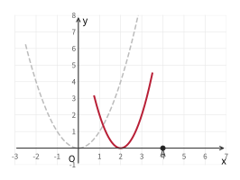
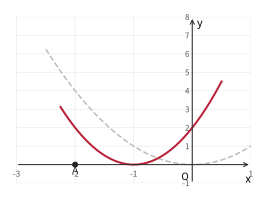
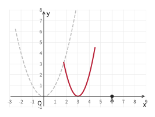

ホーム ＞ 数学C ＞ 媒介変数表示・極座標
別冊練習問題 10 の解答 放物線上の点と定点の中点の軌跡
(1) 放物線 \(y=x^2\) 上を動く点 \(P\) と、定点 \(A(4,\ 0)\) の中点 \(M\) の軌跡の方程式を求めよ。
中点の座標
\(P(t,\ t^2)\) と \(A(4,0)\) の中点 \(M(x,y)\)：
\[x=\dfrac{t+4}{2},\qquad y=\dfrac{t^2}{2}\]\(t\) を消去
\(t=2x-4\) を代入：
\[y=\dfrac{(2x-4)^2}{2}=2 x^{2} - 8 x + 8\]
【答案】
\[y=2 x^{2} - 8 x + 8\]答
(2) 放物線 \(y=x^2\) 上を動く点 \(P\) と、定点 \(A(-2,\ 0)\) の中点 \(M\) の軌跡の方程式を求めよ。
中点の座標
\(P(t,\ t^2)\) と \(A(-2,0)\) の中点 \(M(x,y)\)：
\[x=\dfrac{t-2}{2},\qquad y=\dfrac{t^2}{2}\]\(t\) を消去
\(t=2x+2\) を代入：
\[y=\dfrac{(2x+2)^2}{2}=2 x^{2} + 4 x + 2\]
【答案】
\[y=2 x^{2} + 4 x + 2\]答
(3) 放物線 \(y=x^2\) 上を動く点 \(P\) と、定点 \(A(6,\ 0)\) の中点 \(M\) の軌跡の方程式を求めよ。
中点の座標
\(P(t,\ t^2)\) と \(A(6,0)\) の中点 \(M(x,y)\)：
\[x=\dfrac{t+6}{2},\qquad y=\dfrac{t^2}{2}\]\(t\) を消去
\(t=2x-6\) を代入：
\[y=\dfrac{(2x-6)^2}{2}=2 x^{2} - 12 x + 18\]
【答案】
\[y=2 x^{2} - 12 x + 18\]答